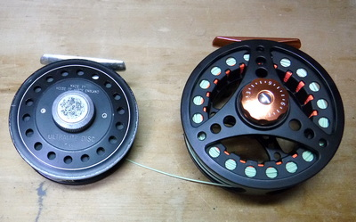
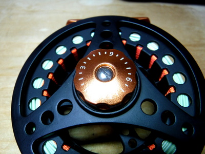

ティップス
釣りの最中に ファイト中のリールのドラグ調整について
最近のリールでは、ディスクドラグが装備されているタイプが多いと思われます。昔のリールでは、ラチェット式のドラグでした。

ディスクドラグの調整用つまみ
いずれにしても、魚の引きに抵抗するドラグの強さは、何段階かに分かれたドラグつまみを回転させて強弱を変えるしくみだと思います。

ドラグのノッチ（調整用のきざみ）
ここで１点気を付けなければいけないことは、懸命に釣り人から逃れようと魚が疾走している瞬間に、ドラグを効かせようと、ノッチ（調整用のきざみ）を強めると、その段階的な、ガクッという抵抗力の増加によってティペットが切れることがあります。
特に、細いティペットで大物とやり取りする時には、この操作は厳禁です。スペースがあるならばドラグ強度はそのままにして魚を走らせましょう。魚が障害物に逃げ込もうと試みて、どうしても疾走を止める必要がある時には、掌を慎重にスプールに当てて圧力を掛け、滑らかに回転を制御しましょう。
昔、1997年の初めてのニュージーランド釣行で、ノッチを目いっぱい強めた途端、3Xを切られて非常に悔しい思いをしたことがあります。ちなみにそのリールは、ハーディのウルトラライトディスクで、1995年頃に購入した製品でした。
2020/03/13
追記：最近、MaxCatch 社の ECO というモデルのフライリールを買ったのですが、ディスクドラグの調整はほぼ無段階で、じわじわと締めることが可能なので、なかなかディスクドラグの構造・技術が進歩したのだなと感心しました。
2020/03/27
ティップス 目次へ
サイトマップ
ホームへ
お問い合わせ